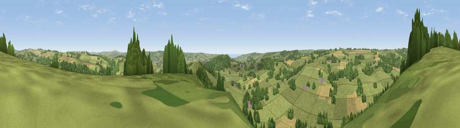

Viewpoint near Dalwood
#13240 in England · top 28% of its area beats it · near DalwoodThe view, rendered

A 360° render of this exact spot computed from the terrain model, tree cover and land cover — summer colours, afternoon light, calibrated against photographs of famous viewpoints. Real trees, hedges and buildings will differ in detail.
The panorama
Grey silhouette: terrain skyline in each direction (720 bearings, Earth curvature and refraction included). Dashed green: skyline with trees (+15 m) and buildings (+8 m) as obstacles. Blue strip: how far the ground is visible on each bearing.
Where the view opens
Wedge length = distance to the farthest visible ground on that bearing (vegetation-aware). Rings at 10, 25 and 50 km.
What fills the view
68% grassland · 20% woodland · 11% cropland ·
Angular shares of the visible panorama (visual magnitude), not map area. Landscape diversity 0.39 (0–1 Shannon).
Key numbers
More beautiful places nearby
The staircase of upgrades: each row has a higher view potential than everything closer. Driving times are estimates from straight-line distance, calibrated against real road routing — check an actual route before setting out.
| Place | Direction | Drive | Score |
|---|---|---|---|
| Viewpoint near Dalwood | NNW · 1 km | ~3 min | 64.0 |
| Widworthy Hill | SW · 5 km | ~10 min | 64.6 |
| Viewpoint near Membury | NE · 5 km | ~11 min | 65.0 |
| Viewpoint near Axmouth | S · 10 km | ~20 min | 73.4 |
| Viewpoint near Axmouth | SSE · 12 km | ~22 min | 78.5 |
| Lambert's Castle Hill | ESE · 12 km | ~23 min | 78.7 |
| Viewpoint near Uplyme | SSE · 12 km | ~23 min | 80.3 |
| Viewpoint near Axmouth | SSE · 12 km | ~23 min | 82.4 |
50.80843, -3.06262 · source: screening · position refined by local search. Computed location — check access rights before visiting.